Apache Subversion 通常被缩写成 SVN，是一个开放源代码的版本控制系统，Subversion 在 2000 年由 CollabNet Inc 开发，现在发展成为 Apache 软件基金会的一个项目，同样是一个丰富的开发者和用户社区的一部分。
SVN相对于的RCS、CVS，采用了分支管理系统，它的设计目标就是取代CVS。互联网上免费的版本控制服务多基于Subversion。
本教程是让对有版本控制需求且对 SVN 感兴趣的软件开发人员学习 SVN 的基本知识，通过本教程你可以一步一步了解 SVN 的使用。
在你继续本教程之前，你必须对简单的术语有一定的了解，比如源码，文档等等。如果你有软件开发或软件测试的工作经历是最好的。
虽然在 2006年 时 Subversion 的使用族群仍然远少于传统的 CVS，但已经有许多开放源码团体决定将 CVS 转换为 Subversion。已经转换使用 Subversion 的包括了 FreeBSD、Apache Software Foundation、KDE、GNOME、GCC、Python、Samba、Mono 以及许多团体。有许多的团队换用 Subversion 是因为 Trac 所提供的专案管理环境。除此之外，一些自由软件开发的协作网如SourceForge除了提供 CVS 外，现在也提供专案开发者使用 Subversion 作为源码管理系统， JavaForge、Google Code以及 BountySource 则以 Subversion 作为官方的源码管理系统。
SVN 官网：https://subversion.apache.org/
Github SVN 源码：https://github.com/apache/subversion
Subversion(SVN) 是一个开源的版本控制系統, 也就是说 Subversion 管理着随时间改变的数据。 这些数据放置在一个中央资料档案库(repository) 中。 这个档案库很像一个普通的文件服务器, 不过它会记住每一次文件的变动。 这样你就可以把档案恢复到旧的版本, 或是浏览文件的变动历史。
日常开发过程其实就是这样的（假设你已经Checkout并且已经工作了几天）：Update(获得最新的代码) -->作出自己的修改并调试成功 --> Commit(大家就可以看到你的修改了) 。
如果两个程序员同时修改了同一个文件呢, SVN 可以合并这两个程序员的改动，实际上 SVN 管理源代码是以行为单位的，就是说两个程序员只要不是修改了同一行程序，SVN 都会自动合并两种修改。如果是同一行，SVN 会提示文件 Conflict, 冲突，需要手动确认。
CVS 只能跟踪单个文件的历史, 不过 Subversion 实作了一个 "虚拟" 的版本控管文件系统, 能够依时间跟踪整个目录的变动。 目录和文件都能进行版本控制。
自从 CVS 限制了文件的版本记录，CVS 并不支持那些可能发生在文件上，但会影响所在目录内容的操作，如同复制和重命名。除此之外，在 CVS 里你不能用拥有同样名字但是没有继承老版本历史或者根本没有关系的文件替换一个已经纳入系统的文件。在 Subversion 中，你可以增加（add）、删除（delete）、复制（copy）和重命名（rename），无论是文件还是目录。所有的新加的文件都从一个新的、干净的版本开始。
一个提交动作，不是全部更新到了档案库中，就是不完全更新。这允许开发人员以逻辑区间建立并提交变动，以防止当部分提交成功时出现的问题。
每一个文件与目录都附有一組属性关键字并和属性值相关联。你可以创建, 并儲存任何你想要的Key/Value对。 属性是随着时间来作版本控管的,就像文件內容一样。
Subversion 有抽象的档案库存取概念, 可以让人很容易地实作新的网络机制。 Subversion 可以作为一个扩展模块嵌入到 Apache HTTP 服务器中。这个为 Subversion 提供了非常先进的稳定性和协同工作能力，除此之外还提供了许多重要功能: 举例来说, 有身份认证, 授权, 在线压缩, 以及文件库浏览等等。还有一个轻量级的独立 Subversion 服务器， 使用的是自定义的通信协议, 可以很容易地通过 ssh 以 tunnel 方式使用。
Subversion 使用二进制差异算法来异表示文件的差异, 它对文字(人类可理解的)与二进制文件(人类无法理解的) 两类的文件都一视同仁。 这两类的文件都同样地以压缩形式储存在档案库中, 而且文件差异是以两个方向在网络上传输的。
在分支与标签上的消耗并不必一定要与项目大小成正比。 Subversion 建立分支与标签的方法, 就只是复制该项目, 使用的方法就类似于硬连接（hard-link）。 所以这些操作只会花费很小, 而且是固定的时间。
Subversion没有任何的历史包袱; 它主要是一群共用的 C 程序库, 具有定义完善的API。这使得 Subversion 便于维护, 并且可被其它应用程序与程序语言使用。
1、原子提交：一次提交不管是单个还是多个文件，都是作为一个整体提交的，所以要么全部提交成功，要么就是全部不成功，这样就不会引起数据库的不完整和数据损坏。
2、重命名、复制、删除文件等动作都保存在版本历史记录当中。
3、对于二进制文件，使用了节省空间的保存方法。（简单的理解，就是只保存和上一版本不同之处）
4、目录也有版本历史。整个目录树可以被移动或者复制，操作很简单，而且能够保留全部版本记录。
5、分支的开销非常小。
6、优化过的数据库访问，使得一些操作不必访问数据库就可以做到。这样减少了很多不必要的和数据库主机之间的网络流量。
1、准备svn的安装文件
下载地址：https://sourceforge.net/projects/win32svn/
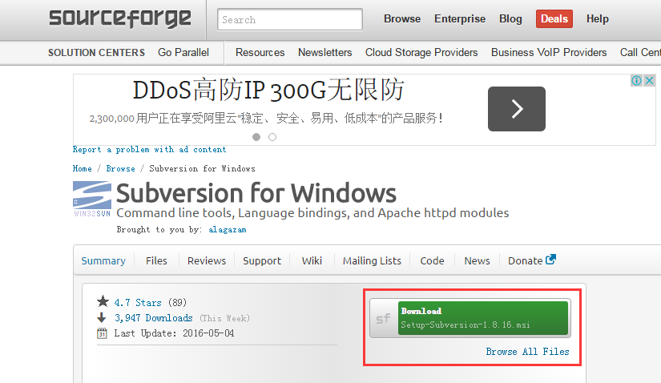
2、下载完成后，在相应的盘符中会有一个Setup-Subversion-1.8.16.msi的文件，目前最新的版本是1.8.16， 这里就使用这个版本。然后双击安装文件进行安装。我们指定安装在D:\Program Files (x86)\Subversion目录里。
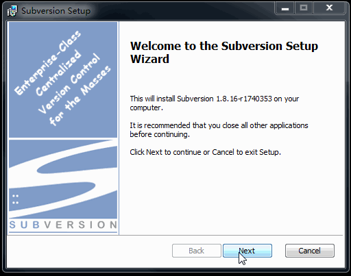
3、查看目录结构
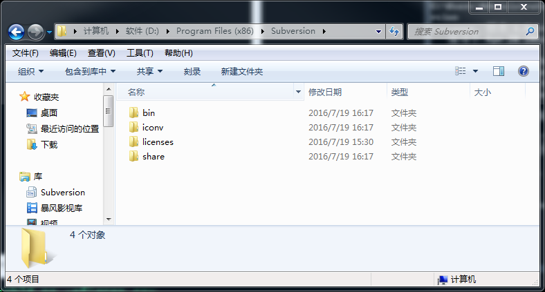
把svn安装目录里的bin目录添加到path路径中，在命令行窗口中输入 svnserve --help ,查看安装正常与否。
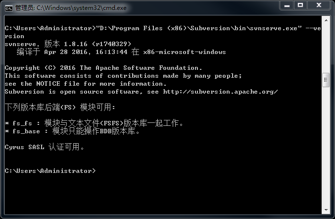
至此，windows下的SVN安装完成
大多数 GNU/Linux 发行版系统自带了Subversion ，所以它很有可能已经安装在你的系统上了。可以使用下面命令检查是否安装了。
svn --version
如果 Subversion 客户端没有安装，命令将报告svn命令找不到的错误。
[runoob@centos6 ~]$ svn --version bash: svn: command not found
我们可以使用 yum install subversion 命令进行安装。
[runoob@centos6 root]$ su - 密码： [root@centos6 ~]# yum install subversion 已加载插件：fastestmirror, security 设置安装进程 Loading mirror speeds from cached hostfile * base: mirrors.aliyun.com * epel: mirrors.neusoft.edu.cn * extras: mirrors.zju.edu.cn * updates: mirrors.aliyun.com 解决依赖关系 --> 执行事务检查 ...
安装成功之后，执行 svn --version 命令。
[root@centos6 ~]# svn --version svn，版本 1.6.11 (r934486) 编译于 Aug 17 2015，08:37:43
至此，centos下的SVN安装完成。
如果 Subversion 客户端没有安装，命令将报告svn命令找不到的错误。
root@runoob:~# svn --version The program 'svn' is currently not installed. You can install it by typing: apt-get install subversion
我们可以使用 apt-get 命令进行安装
root@runoob:~# apt-get install subversion Reading package lists... Done Building dependency tree Reading state information... Done The following packages were automatically installed and are no longer required: augeas-lenses hiera libaugeas0 libxslt1.1 ruby-augeas ruby-deep-merge ruby-json ruby-nokogiri ruby-rgen ruby-safe-yaml ruby-selinux ruby-shadow Use 'apt-get autoremove' to remove them. The following extra packages will be installed: libserf-1-1 libsvn1 ...
安装成功之后，执行 svn --version 命令。
root@runoob:~# svn --version svn, version 1.8.13 (r1667537) compiled Sep 8 2015, 14:59:01 on x86_64-pc-linux-gnu
至此，Ubuntu下的SVN安装完成。
本章讨论了版本控制系统的生命周期。
版本库相当于一个集中的空间，用于存放开发者所有的工作成果。版本库不仅能存放文件，还包括了每次修改的历史，即每个文件的变动历史。
Create 操作是用来创建一个新的版本库。大多数情况下这个操作只会执行一次。当你创建一个新的版本库的时候，你的版本控制系统会让你提供一些信息来标识版本库，例如创建的位置和版本库的名字。
Checkout 操作是用来从版本库创建一个工作副本。工作副本是开发者私人的工作空间，可以进行内容的修改，然后提交到版本库中。
顾名思义，update 操作是用来更新版本库的。这个操作将工作副本与版本库进行同步。由于版本库是由整个团队共用的，当其他人提交了他们的改动之后，你的工作副本就会过期。
让我们假设 Tom 和 Jerry 是一个项目的两个开发者。他们同时从版本库中检出了最新的版本并开始工作。此时，工作副本是与版本库完全同步的。然后，Jerry 很高效的完成了他的工作并提交了更改到版本库中。
此时 Tom 的工作副本就过期了。更新操作将会从版本库中拉取 Jerry 的最新改动并将 Tom 的工作副本进行更新。
当检出之后，你就可以做很多操作来执行变更。编辑是最常用的操作。你可以编辑已存在的文件，例如进行文件的添加/删除操作。
你可以添加文件/目录。但是这些添加的文件目录不会立刻成为版本库的一部分，而是被添加进待变更列表中，直到执行了 commit 操作后才会成为版本库的一部分。
同样地你可以删除文件/目录。删除操作立刻将文件从工作副本中删除掉，但该文件的实际删除只是被添加到了待变更列表中，直到执行了 commit 操作后才会真正删除。
Rename 操作可以更改文件/目录的名字。"移动"操作用来将文件/目录从一处移动到版本库中的另一处。
当你检出工作副本或者更新工作副本后，你的工作副本就跟版本库完全同步了。但是当你对工作副本进行一些修改之后，你的工作副本会比版本库要新。在 commit 操作之前复查下你的修改是一个很好的习惯。
Status 操作列出了工作副本中所进行的变动。正如我们之前提到的，你对工作副本的任何改动都会成为待变更列表的一部分。Status 操作就是用来查看这个待变更列表。
Status 操作只是提供了一个变动列表，但并不提供变动的详细信息。你可以用 diff 操作来查看这些变动的详细信息。
我们来假设你对工作副本做了许多修改，但是现在你不想要这些修改了，这时候 revert 操作将会帮助你。
Revert 操作重置了对工作副本的修改。它可以重置一个或多个文件/目录。当然它也可以重置整个工作副本。在这种情况下，revert 操作将会销毁待变更列表并将工作副本恢复到原始状态。
合并的时候可能会发生冲突。Merge 操作会自动处理可以安全合并的东西。其它的会被当做冲突。例如，"hello.c" 文件在一个分支上被修改，在另一个分支上被删除了。这种情况就需要人为处理。Resolve 操作就是用来帮助用户找出冲突并告诉版本库如何处理这些冲突。
Commit 操作是用来将更改从工作副本到版本库。这个操作会修改版本库的内容，其它开发者可以通过更新他们的工作副本来查看这些修改。
在提交之前，你必须将文件/目录添加到待变更列表中。列表中记录了将会被提交的改动。当提交的时候，我们通常会提供一个注释来说明为什么会进行这些改动。这个注释也会成为版本库历史记录的一部分。Commit 是一个原子操作，也就是说要么完全提交成功，要么失败回滚。用户不会看到成功提交一半的情况。
首先,在服务端进行SVN版本库的相关配置
手动新建版本库目录
mkdir /opt/svn
利用svn命令创建版本库
svnadmin create /opt/svn/runoob
使用命令svnserve启动服务
svnserve -d -r 目录 --listen-port 端口号
-r: 配置方式决定了版本库访问方式。
--listen-port: 指定SVN监听端口，不加此参数，SVN默认监听3690
由于-r 配置方式的不一样，SVN启动就可以有两种不同的访问方式
方式一：-r直接指定到版本库(称之为单库svnserve方式)
svnserve -d -r /opt/svn/runoob
在这种情况下，一个svnserve只能为一个版本库工作。
authz配置文件中对版本库权限的配置应这样写：
[groups] admin=user1 dev=user2 [/] @admin=rw user2=r
使用类似这样的URL：svn://192.168.0.1/ 即可访问runoob版本库
方式二：指定到版本库的上级目录(称之为多库svnserve方式)
svnserve -d -r /opt/svn
这种情况，一个svnserve可以为多个版本库工作
authz配置文件中对版本库权限的配置应这样写：
[groups] admin=user1 dev=user2 [runoob:/] @admin=rw user2=r [runoob01:/] @admin=rw user2=r
如果此时你还用[/]，则表示所有库的根目录，同理，[/src]表示所有库的根目录下的src目录。
使用类似这样的URL：svn://192.168.0.1/runoob 即可访问runoob版本库。
使用 svn 命令创建资源库：
[runoob@centos6 ~]# svnadmin create /opt/svn/runoob01 [runoob@centos6 ~]# ll /opt/svn/runoob01/ total 24 drwxr-xr-x 2 root root 4096 2016/08/23 16:31:06 conf drwxr-sr-x 6 root root 4096 2016/08/23 16:31:06 db -r--r--r-- 1 root root 2 2016/08/23 16:31:06 format drwxr-xr-x 2 root root 4096 2016/08/23 16:31:06 hooks drwxr-xr-x 2 root root 4096 2016/08/23 16:31:06 locks -rw-r--r-- 1 root root 229 2016/08/23 16:31:06 README.txt
进入 /opt/svn/runoob01/conf 目录，修改默认配置文件配置，包括 svnserve.conf、passwd、authz 配置相关用户和权限。
1、svn 服务配置文件 svnserve.conf
svn 服务配置文件为版本库目录中的文件 conf/svnserve.conf。该文件仅由一个 [general] 配置段组成。
[general] anon-access = none auth-access = write password-db = /home/svn/passwd authz-db = /home/svn/authz realm = tiku
anon-access: 控制非鉴权用户访问版本库的权限，取值范围为 "write"、"read" 和 "none"。 即 "write" 为可读可写，"read" 为只读，"none" 表示无访问权限，默认值：read。
auth-access: 控制鉴权用户访问版本库的权限。取值范围为 "write"、"read" 和 "none"。 即"write"为可读可写，"read"为只读，"none"表示无访问权限，默认值：write。
authz-db: 指定权限配置文件名，通过该文件可以实现以路径为基础的访问控制。 除非指定绝对路径，否则文件位置为相对conf目录的相对路径，默认值：authz。
realm: 指定版本库的认证域，即在登录时提示的认证域名称。若两个版本库的认证域相同，建议使用相同的用户名口令数据文件。默认值：一个UUID(Universal Unique IDentifier，全局唯一标示)。
2、用户名口令文件 passwd
用户名口令文件由 svnserve.conf 的配置项 password-db 指定，默认为 conf 目录中的 passwd。该文件仅由一个 [users] 配置段组成。
[users] 配置段的配置行格式如下：
<用户名> = <口令>
[users] admin = admin thinker = 123456
3、权限配置文件
权限配置文件由 svnserve.conf 的配置项 authz-db 指定，默认为 conf 目录中的 authz。该配置文件由一个 [groups] 配置段和若干个版本库路径权限段组成。
[groups]配置段中配置行格式如下：
<用户组> = <用户列表>
版本库路径权限段的段名格式如下：
[<版本库名>:<路径>]
[groups] g_admin = admin,thinker [admintools:/] @g_admin = rw * = [test:/home/thinker] thinker = rw * = r
本例是使用 svnserve -d -r /opt/svn 以多库 svnserve 方式启动 SVN，所以 URL：svn://192.168.0.1/runoob01。
上一章中，我们创建了版本库runoob01,URL为svn://192.168.0.1/runoob01,svn用户user01有读写权限。
我们就可以通过这个URL在客户端对版本库进行检出操作。
svn checkout http://svn.server.com/svn/project_repo --username=user01 以上命令将产生如下结果：
root@runoob:~/svn# svn checkout svn://192.168.0.1/runoob01 --username=user01 A runoob01/trunk A runoob01/branches A runoob01/tags Checked out revision 1.
检出成功后在当前目录下生成runoob01副本目录。查看检出的内容
root@runoob:~/svn# ll runoob01/ total 24 drwxr-xr-x 6 root root 4096 Jul 21 19:19 ./ drwxr-xr-x 3 root root 4096 Jul 21 19:10 ../ drwxr-xr-x 2 root root 4096 Jul 21 19:19 branches/ drwxr-xr-x 4 root root 4096 Jul 21 19:19 .svn/ drwxr-xr-x 2 root root 4096 Jul 21 19:19 tags/ drwxr-xr-x 2 root root 4096 Jul 21 19:19 trunk/
你想查看更多关于版本库的信息，执行 info 命令。
假设 A、B 两个用户都在版本号为 100 的时候，更新了 kingtuns.txt 这个文件，A 用户在修改完成之后提交 kingtuns.txt 到服务器， 这个时候提交成功，这个时候 kingtuns.txt 文件的版本号已经变成 101 了。同时B用户在版本号为 100 的 kingtuns.txt 文件上作修改， 修改完成之后提交到服务器时，由于不是在当前最新的 101 版本上作的修改，所以导致提交失败。
我们已在本地检出 runoob01 库，下面我们将实现版本冲突的解决方法。
我们发现 HelloWorld.html 文件存在错误，需要修改文件并提交到版本库中。
我们将 HelloWorld.html 的内容修改为 "HelloWorld! https://www.runoob.com/"。
root@runoob:~/svn/runoob01/trunk# cat HelloWorld.html HelloWorld! http://www.runoob.com/
用下面的命令查看更改：
root@runoob:~/svn/runoob01/trunk# svn diff Index: HelloWorld.html =================================================================== --- HelloWorld.html (revision 5) +++ HelloWorld.html (working copy) @@ -1,2 +1 @@ -HelloWorld! http://www.runoob.com/ +HelloWorld! http://www.runoob.com/!
尝试使用下面的命令来提交他的更改：
root@runoob:~/svn/runoob01/trunk# svn commit -m "change HelloWorld.html first" Sending HelloWorld.html Transmitting file data .svn: E160028: Commit failed (details follow): svn: E160028: File '/trunk/HelloWorld.html' is out of date
这时我发现提交失败了。
因为此时，HelloWorld.html 已经被 user02 修改并提交到了仓库。Subversion 不会允许 user01(本例使用的 svn 账号)提交更改，因为 user02 已经修改了仓库，所以我们的工作副本已经失效。
为了避免两人的代码被互相覆盖，Subversion 不允许我们进行这样的操作。所以我们在提交更改之前必须先更新工作副本。所以使用 update 命令，如下：
root@runoob:~/svn/runoob01/trunk# svn update
Updating '.':
C HelloWorld.html
Updated to revision 6.
Conflict discovered in file 'HelloWorld.html'.
Select: (p) postpone, (df) show diff, (e) edit file, (m) merge,
(mc) my side of conflict, (tc) their side of conflict,
(s) show all options: mc
Resolved conflicted state of 'HelloWorld.html'
Summary of conflicts:
Text conflicts: 0 remaining (and 1 already resolved)
这边输入"mc",以本地的文件为主。你也可以使用其选项对冲突的文件进行不同的操作。
默认是更新到最新的版本，我们也可以指定更新到哪个版本
svn update -r6
此时工作副本是和仓库已经同步，可以安全地提交更改了
root@runoob:~/svn/runoob01/trunk# svn commit -m "change HelloWorld.html second" Sending HelloWorld.html Transmitting file data . Committed revision 7.
在上一章中，我们检出了版本库runoob01，对应的目录放在/home/user01/runoob01中，下面我们针对这个库进行版本控制。
我们在库本版中需要增加一个readme的说明文件。
root@runoob:~/svn/runoob01/trunk# cat readme this is SVN tutorial.
查看工作副本中的状态。
root@runoob:~/svn/runoob01/trunk# svn status ? readme
此时 readme的状态为？，说明它还未加到版本控制中。
将文件readme加到版本控制，等待提交到版本库。
root@runoob:~/svn/runoob01/trunk# svn add readme A readme
查看工作副本中的状态
root@runoob:~/svn/runoob01/trunk# svn status A readme
此时 readme的状态为A,它意味着这个文件已经被成功地添加到了版本控制中。
为了把 readme 存储到版本库中，使用 commit -m 加上注释信息来提交。
如果你忽略了 -m 选项， SVN会打开一个可以输入多行的文本编辑器来让你输入提交信息。
root@runoob:~/svn/runoob01/trunk# svn commit -m "SVN readme." Adding readme Transmitting file data . Committed revision 8. svn commit -m "SVN readme."
现在 readme 被成功地添加到了版本库中，并且修订版本号自动增加了1。
当我们想放弃对文件的修改，可以使用 SVN revert 命令。
svn revert 操作将撤销任何文件或目录里的局部更改。
我们对文件 readme 进行修改,查看文件状态。
root@runoob:~/svn/runoob01/trunk# svn status M readme
这时我们发现修改错误，要撤销修改，通过 svn revert 文件 readme 回归到未修改状态。
root@runoob:~/svn/runoob01/trunk# svn revert readme Reverted 'readme'
再查看状态。
root@runoob:~/svn/runoob01/trunk# svn status root@runoob:~/svn/runoob01/trunk#
进行 revert 操作之后，readme 文件恢复了原始的状态。 revert 操作不单单可以使单个文件恢复原状， 而且可以使整个目录恢复原状。恢复目录用 -R 命令，如下。
svn revert -R trunk
但是，假如我们想恢复一个已经提交的版本怎么办。
为了消除一个旧版本，我们必须撤销旧版本里的所有更改然后提交一个新版本。这种操作叫做 reverse merge。
首先，找到仓库的当前版本，现在是版本 22，我们要撤销回之前的版本，比如版本 21。
svn merge -r 22:21 readme
通过svn命令可以根据时间或修订号去除过去的版本，或者某一版本所做的具体的修改。以下四个命令可以用来查看svn 的历史：
svn log: 用来展示svn 的版本作者、日期、路径等等。
svn diff: 用来显示特定修改的行级详细信息。
svn cat: 取得在特定版本的某文件显示在当前屏幕。
svn list: 显示一个目录或某一版本存在的文件。
可以显示所有的信息，如果只希望查看特定的某两个版本之间的信息，可以使用：
root@runoob:~/svn/runoob01/trunk# svn log -r 6:8 ------------------------------------------------------------------------ r6 | user02 | 2016-11-07 02:01:26 +0800 (Mon, 07 Nov 2016) | 1 line change HelloWorld.html first. ------------------------------------------------------------------------ r7 | user01 | 2016-11-07 02:23:26 +0800 (Mon, 07 Nov 2016) | 1 line change HelloWorld.html second ------------------------------------------------------------------------ r8 | user01 | 2016-11-07 02:53:13 +0800 (Mon, 07 Nov 2016) | 1 line SVN readme. ------------------------------------------------------------------------
如果只想查看某一个文件的版本修改信息，可以使用 svn log 文件路径。
root@runoob:~/svn/runoob01# svn log trunk/HelloWorld.html ------------------------------------------------------------------------ r7 | user01 | 2016-11-07 02:23:26 +0800 (Mon, 07 Nov 2016) | 1 line change HelloWorld.html second ------------------------------------------------------------------------ r6 | user02 | 2016-11-07 02:01:26 +0800 (Mon, 07 Nov 2016) | 1 line change HelloWorld.html first. ------------------------------------------------------------------------ r5 | user01 | 2016-11-07 01:50:03 +0800 (Mon, 07 Nov 2016) | 1 line ------------------------------------------------------------------------ r4 | user01 | 2016-11-07 01:45:43 +0800 (Mon, 07 Nov 2016) | 1 line Add function to accept input and to display array contents ------------------------------------------------------------------------ r3 | user01 | 2016-11-07 01:42:35 +0800 (Mon, 07 Nov 2016) | 1 line ------------------------------------------------------------------------ r2 | user01 | 2016-08-23 17:29:02 +0800 (Tue, 23 Aug 2016) | 1 line first file ------------------------------------------------------------------------
如果希望得到目录的信息要加 -v。
如果希望显示限定N条记录的目录信息，使用 svn log -l N -v。
root@runoob:~/svn/runoob01/trunk# svn log -l 5 -v ------------------------------------------------------------------------ r6 | user02 | 2016-11-07 02:01:26 +0800 (Mon, 07 Nov 2016) | 1 line Changed paths: M /trunk/HelloWorld.html change HelloWorld.html first. ------------------------------------------------------------------------ r5 | user01 | 2016-11-07 01:50:03 +0800 (Mon, 07 Nov 2016) | 1 line Changed paths: M /trunk/HelloWorld.html ------------------------------------------------------------------------ r4 | user01 | 2016-11-07 01:45:43 +0800 (Mon, 07 Nov 2016) | 1 line Changed paths: M /trunk/HelloWorld.html Add function to accept input and to display array contents ------------------------------------------------------------------------ r3 | user01 | 2016-11-07 01:42:35 +0800 (Mon, 07 Nov 2016) | 1 line Changed paths: A /trunk/HelloWorld.html (from /trunk/helloworld.html:2) D /trunk/helloworld.html ------------------------------------------------------------------------ r2 | user01 | 2016-08-23 17:29:02 +0800 (Tue, 23 Aug 2016) | 1 line Changed paths: A /trunk/helloworld.html first file ------------------------------------------------------------------------
用来检查历史修改的详情。
（1）、如果用 svn diff，不带任何参数，它将会比较你的工作文件与缓存在 .svn 的"原始"拷贝。
root@runoob:~/svn/runoob01/trunk# svn diff Index: rules.txt =================================================================== --- rules.txt (revision 3) +++ rules.txt (working copy) @@ -1,4 +1,5 @@ Be kind to others Freedom = Responsibility Everything in moderation -Chew with your mouth open
（2）、比较工作拷贝和版本库
比较你的工作拷贝和版本库中版本号为 3 的文件 rule.txt。
svn diff -r 3 rule.txt
（3）、比较版本库与版本库
通过 -r(revision) 传递两个通过冒号分开的版本号，这两个版本会进行比较。
比较 svn 工作版本中版本号2和3的这个文件的变化。
svn diff -r 2:3 rule.txt
如果只是希望检查一个过去版本，不希望查看他们的区别，可使用svn cat
svn cat -r 版本号 rule.txt
这个命令会显示在该版本号下的该文件内容
svn list 可以在不下载文件到本地目录的情况下来察看目录中的文件：
$ svn list http://192.168.0.1/runoob01 README branches/ clients/ tags/
Branch 选项会给开发者创建出另外一条线路。当有人希望开发进程分开成两条不同的线路时，这个选项会非常有用。
比如项目 demo 下有两个小组，svn 下有一个 trunk 版。
由于客户需求突然变化，导致项目需要做较大改动，此时项目组决定由小组 1 继续完成原来正进行到一半的工作（某个模块），小组 2 进行新需求的开发。
那么此时，我们就可以为小组2建立一个分支，分支其实就是 trunk 版（主干线）的一个copy版，不过分支也是具有版本控制功能的，而且是和主干线相互独立的，当然，到最后我们可以通过（合并）功能，将分支合并到 trunk 上来，从而最后合并为一个项目。
我们在本地副本中创建一个 my_branch 分支。
root@runoob:~/svn/runoob01# ls branches tags trunk root@runoob:~/svn/runoob01# svn copy trunk/ branches/my_branch A branches/my_branch root@runoob:~/svn/runoob01#
查看状态：
root@runoob:~/svn/runoob01# svn status A + branches/my_branch A + branches/my_branch/HelloWorld.html A + branches/my_branch/readme
提交新增的分支到版本库。
root@runoob:~/svn/runoob01# svn commit -m "add my_branch" Adding branches/my_branch Replacing branches/my_branch/HelloWorld.html Adding branches/my_branch/readme Committed revision 9.
接着我们就到 my_branch 分支进行开发，切换到分支路径并创建 index.html 文件。
root@runoob:~/svn/runoob01# cd branches/my_branch/ root@runoob:~/svn/runoob01/branches/my_branch# ls HelloWorld.html index.html readme
将 index.html 加入版本控制，并提交到版本库中。
root@runoob:~/svn/runoob01/branches/my_branch# svn status ? index.html root@runoob:~/svn/runoob01/branches/my_branch# svn add index.html A index.html root@runoob:~/svn/runoob01/branches/my_branch# svn commit -m "add index.html" Adding index.html Transmitting file data . Committed revision 10.切换到 trunk，执行 svn update，然后将 my_branch 分支合并到 trunk 中。
root@runoob:~/svn/runoob01/trunk# svn merge ../branches/my_branch/ --- Merging r10 into '.': A index.html --- Recording mergeinfo for merge of r10 into '.': G .
此时查看目录，可以看到 trunk 中已经多了 my_branch 分支创建的 index.html 文件。
root@runoob:~/svn/runoob01/trunk# ll total 16 drwxr-xr-x 2 root root 4096 Nov 7 03:52 ./ drwxr-xr-x 6 root root 4096 Jul 21 19:19 ../ -rw-r--r-- 1 root root 36 Nov 7 02:23 HelloWorld.html -rw-r--r-- 1 root root 0 Nov 7 03:52 index.html -rw-r--r-- 1 root root 22 Nov 7 03:06 readme
将合并好的 trunk 提交到版本库中。
root@runoob:~/svn/runoob01/trunk# svn commit -m "add index.html" Adding index.html Transmitting file data . Committed revision 11.
版本管理系统支持 tag 选项，通过使用 tag 的概念，我们可以给某一个具体版本的代码一个更加有意义的名字。
Tags 即标签主要用于项目开发中的里程碑，比如开发到一定阶段可以单独一个版本作为发布等，它往往代表一个可以固定的完整的版本，这跟 VSS 中的 Tag 大致相同。
我们在本地工作副本创建一个 tag。
root@runoob:~/svn/runoob01# svn copy trunk/ tags/v1.0 A tags/v1.0
上面的代码成功完成，新的目录将会被创建在 tags 目录下。
root@runoob:~/svn/runoob01# ls tags/ v1.0 root@runoob:~/svn/runoob01# ls tags/v1.0/ HelloWorld.html readme
查看状态。
root@runoob:~/svn/runoob01# svn status A + tags/v1.0
提交tag内容。
root@runoob:~/svn/runoob01# svn commit -m "tags v1.0" Adding tags/v1.0 Transmitting file data .. Committed revision 14.
TortoiseSVN 是 Subversion 版本控制系统的一个免费开源客户端，可以超越时间的管理文件和目录。
下载地址：https://tortoisesvn.net/downloads.html, 页面里有语言包补丁的下载链接。
目前最新版为 1.11.0 下载地址： https://osdn.net/projects/tortoisesvn/storage/1.11.0/
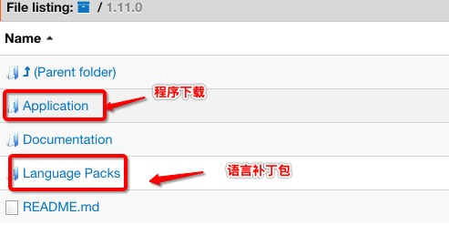
在语言补丁包中我们可以找到中文的补丁并下载下来：
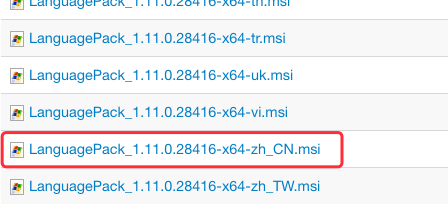
运行下载的 TortoiseSVN 安装程序
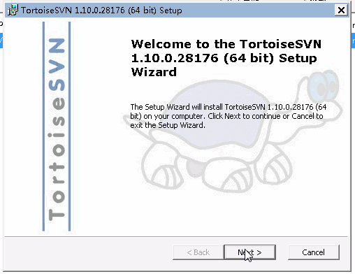
运行下载的 TortoiseSVN 中文语言包
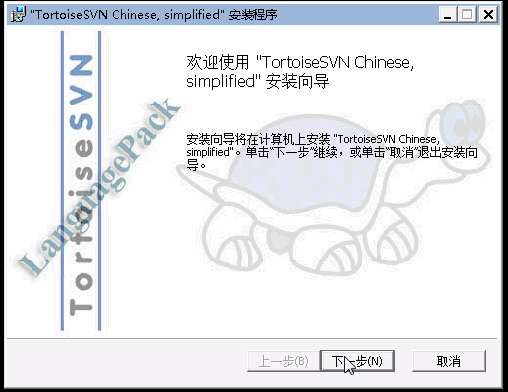
正确安装后，应该进行一次的重开机，以确保 TortoiseSVN 的正确无误。
修改 TortoiseSVN 默认语言
TortoiseSVN 安装完后默认的界面是英文的，我们可以通过设置修改成已安装语言
所谓的 runoob01 目录其实就是您平常用来存放工作档案的地方。通常我们会等到自己的工作做的一个段落的时候再进行备份。所以我们平常都是在 runoob01 目录下面工作，等到适当时机在 commit 到 repository 中。举例来说，我们想在 D 盘下面建立一个名为 runoob01 的目录。首先先把这个目录建立出来。
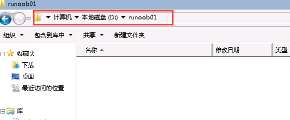
进入创建的目录在空白处按下右键后(您可以在 MyWork 目录的 icon 上按，也可进入 MyWork 目录后，在空白的地方按)，选择 SVN checkout。
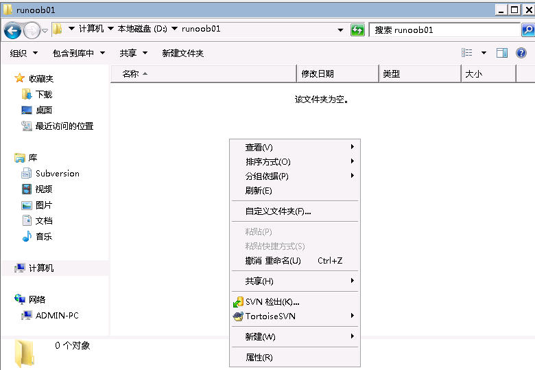
接着您可以看到如下的画面：
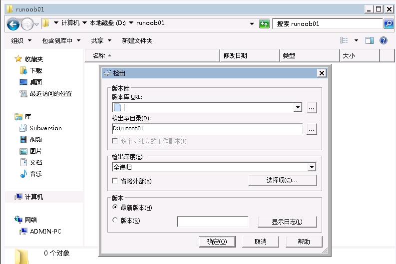
首先我们要填入的是 repository(版本库)的位置，对于 SVN 来说，repository 的位置都是 URL。版本库 URL 这里填入我们测试的版本仓库地址 svn://10.0.4.17/runoob01。
接着，稍微看一下 Checkout directory(检出至目录)，这个字段应该要指向您的 runoob01 目录。
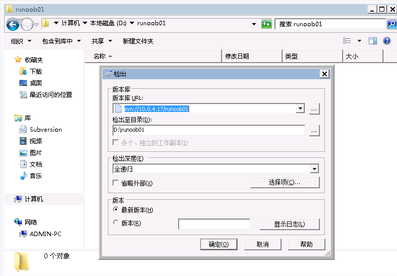
确认后，按下 OK 按钮，您应该可以看到如下的信息窗口。
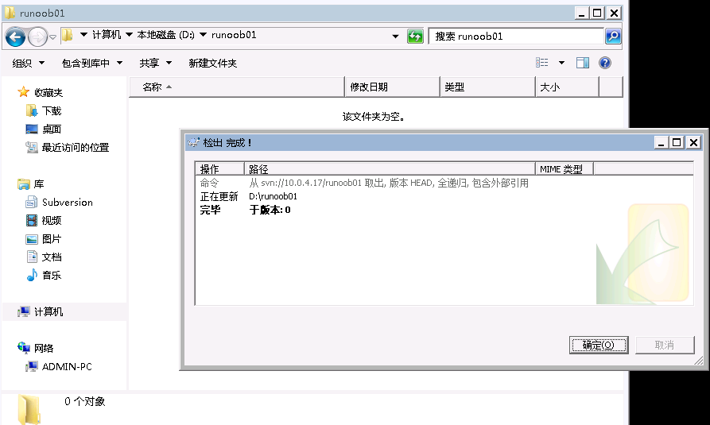
这样就表示动作完成。按下 OK 按钮后，再到您刚刚建立的目录下。您将会看到 MyWork 目录下面多了一个名为 .svn 的目录(这个目录是隐藏的，如果您的档案管理员没有设定可以看到隐藏目录，您将无法看到它) 。
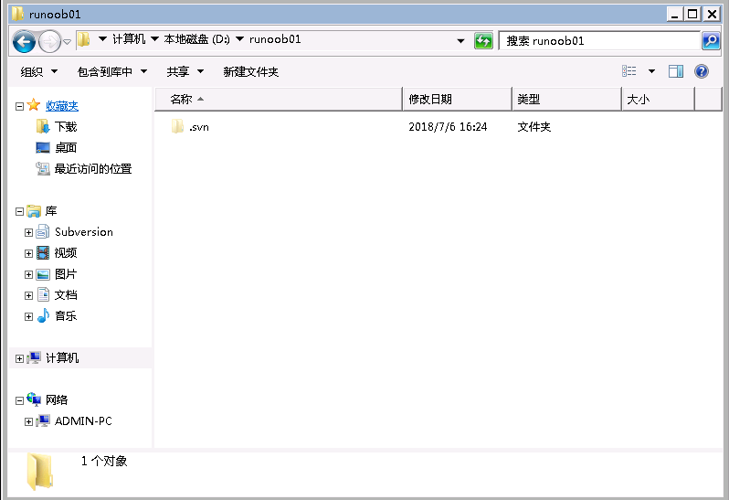
如果您要在一个已经存在的 SVN Server 上面 checkout 出上面的档案，您只需要给定正确的 SVN URL 以及要 checkout 目录的名称。就可以取得指定的档案及目录了。
创建目录 dir01, 在目录里新增文件
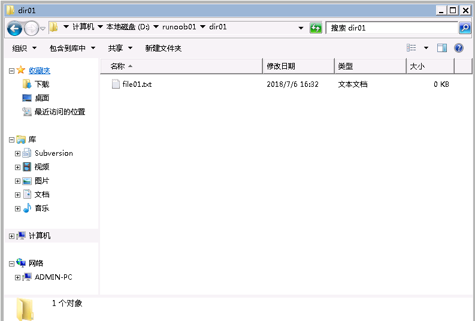
将新增的文件加入到 SVN 版本控制中，TortoiseSVN 会把准备要加入的档案及目录，勾选需要加入的文件。
按下 OK 后，您将会看到如下的讯息窗口：
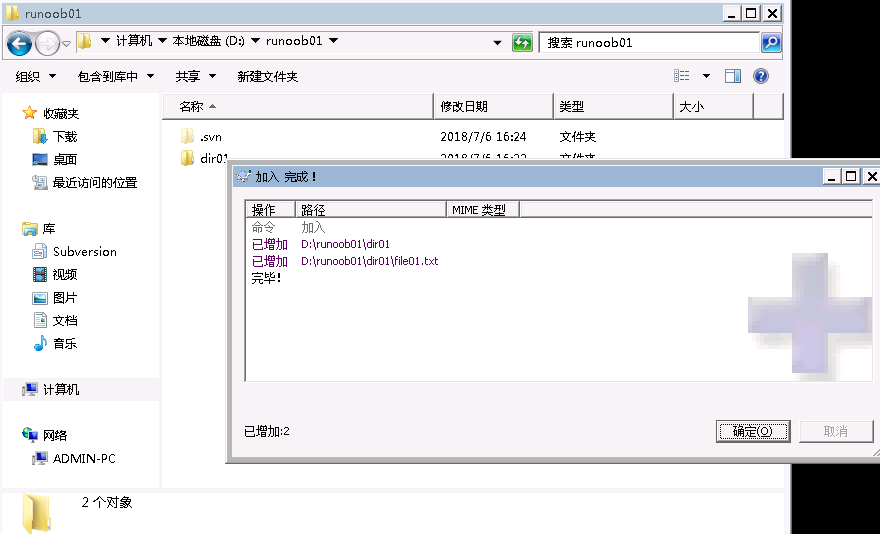
这个 Add(增加)的动作并未真正的将档案放到 Repository 中。仅仅是告知 SVN 准备要在 Repository 中放入这些档案。 此时的文件状态为：
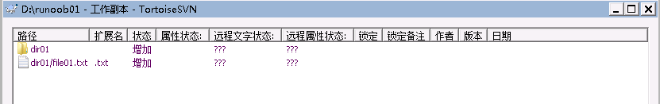
这些档案真正的放入到 Repository 中，空白处右键选择 SVN commit(提交) 紧接着，您将会看到如下的窗口出现：
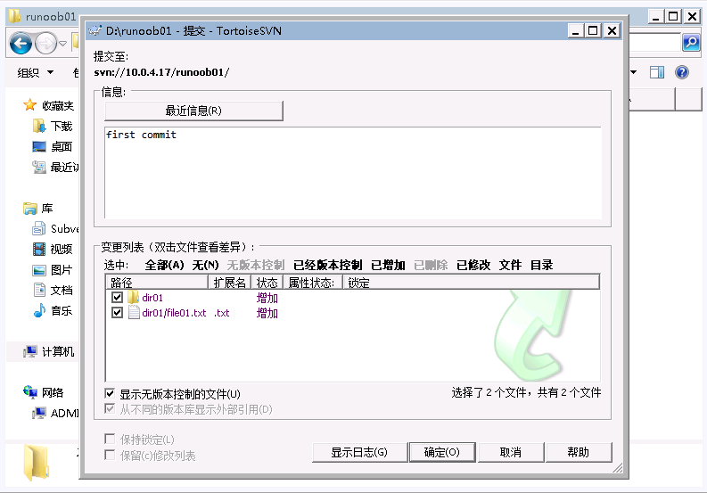
在这里可以清楚地了解到哪些档案要被 commit 到 repository（版本库）中。同样的，如果您有档案不想在这个时候 commit 到 Repository，您可以取消选取的档案，这样他们就不会被 commit 到 Repository 中。在"信息"文本框中可以写入对本次 commit 的说明。
点击"确认"后完成 commit 动作，然后您可以到 runoob 目录中，确定是否所有的档案 icon 都有如下的绿色勾勾在上面，这样代表您的档案都正确无误的到 repository 中。
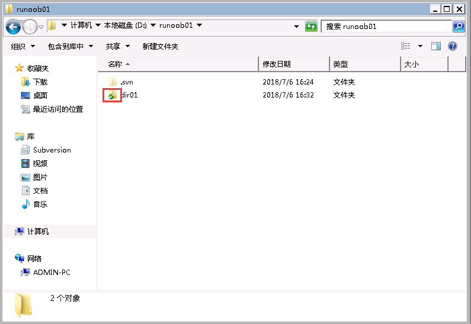
由于版本控制系统多半都是由许多人共同使用。所以，同样的档案可能还有人会去进行编辑。为了确保您工作目录中的档案与 Repository 中的档案是同步的。建议您在编辑前都先进行更新的动作。
在想要更新的档案或目录 icon 上面按下鼠标右键。并且选择 SVN Update。
有时我们需要回溯至特定的日期或是版本，这时就可以利用 SVN 的 Update to revision 的功能。在想要更新的档案或目录 icon 上面按下鼠标右键。并且选择 TortoiseSVN->Update to revision(更新至版本)。
很多时候您会希望有另外一个复制的目录来进行新的编修。等到确定这个分支的修改已经完毕了，再合并到原来的主要开发版本上。举例来说，我们目前在runoob01/trunk下面有如下的目录及档案：
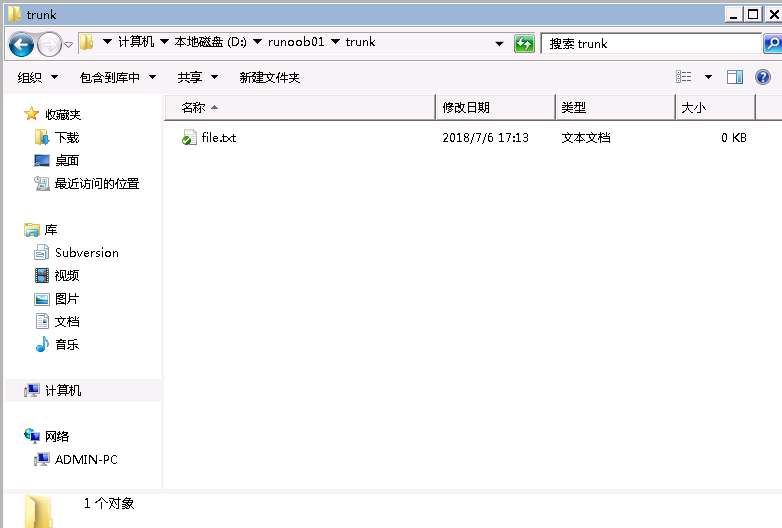
现在，我们要为 trunk 这个目录建立一个 branch。假设我们希望这个目录是在 D:\runoob01\branch。首先我们可以在 trunk 目录下面的空白处，或是直接在 trunk 的 icon 下面按下鼠标右键选择 Branch/Tag…(分支/标记)这个选项，您将会看到如下的对话框出现。
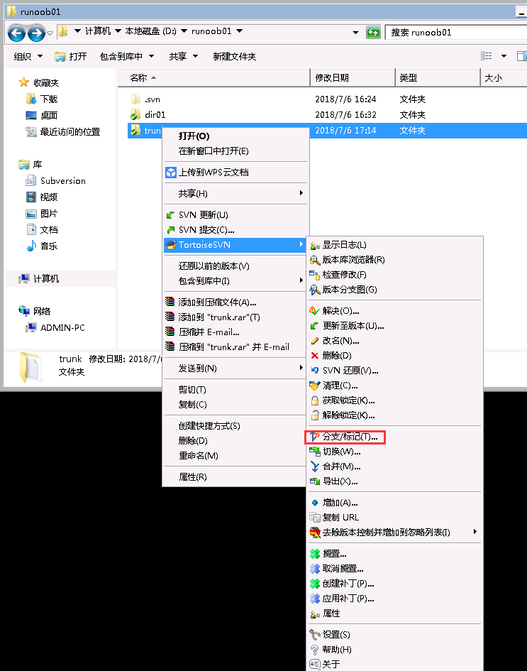
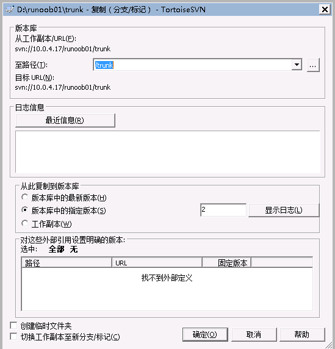
请先确认 From WC at URL(从工作副本/URL): 中的目录是您要复制的来源目录。接着，在 To URL(至路径)中输入您要复制过去的路径。通常我们会将所有的 branch 集中在一个目录下面。以上面的例子来说，branch 档案都会集中在 branch 的子目录下面。在 To URL 中您只需要输入您要的目录即可。目录不存在时，会由 SVN 帮您建立。特别需要注意的是 SVN 以斜线作为目录分隔字符，而非反斜线。 接着在 Log message(日志信息)输入您此次 branch 的目的为何。按下 OK 就可以了。
如果成功，将可以看到下面的画面：
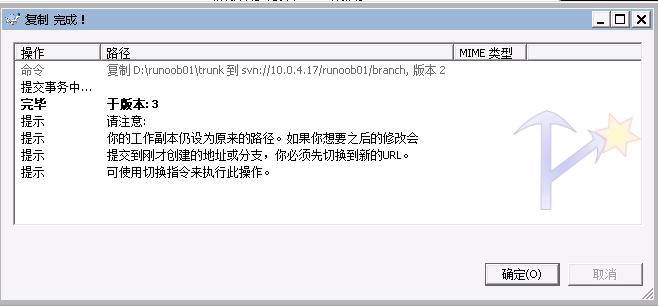
按下 OK 就可以关闭这个窗口了。如果您此时立刻去 runoob01 目录的 branch 子目录下面，您将会失望的发现在该目录下面并没有刚刚指定的目录存在。这是因为您 runoob01 目录的部份还是旧的，您只需要在 branch 子目录下面进行 SVN update 就可以看到这个新增的目录了。新增的目录就与原来的目录无关了。您可以任意对他进行编辑，一直到您确认好所有在 branch 下面该做的工作都完成后，您可以选择将这个 branch merge 回原来的 trunk 目录，或者是保留它在 branch 中。
假如我们在 branch 分支中对文件进行了修改或增加了文件，要 merge 回 trunk 目录中，方法很简单。以上面的例子来说，我们在 D:\runoob01\trunk目录空白处，按下鼠标右键，选择 Merge(合并):
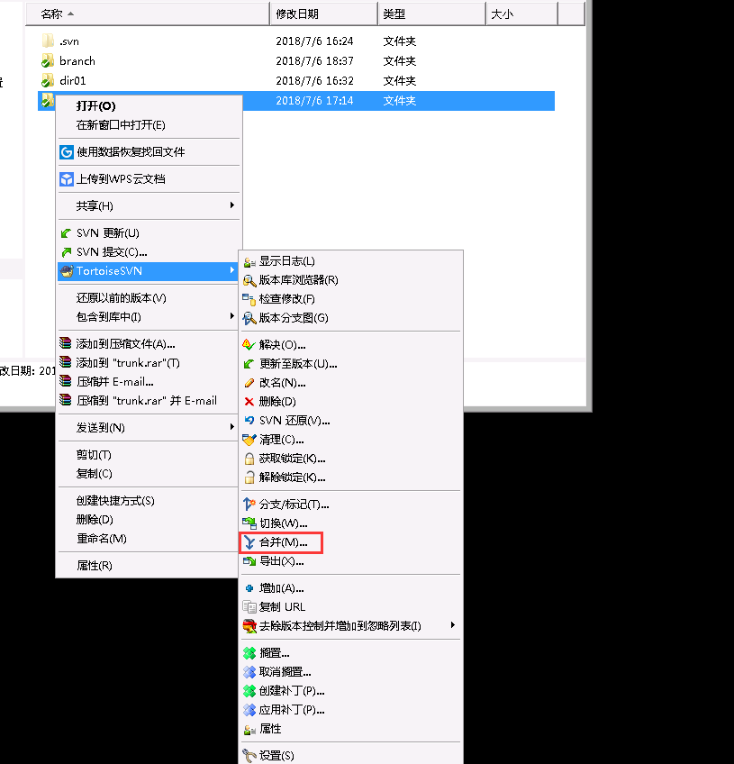
这个画面主要分为三个部份，前面的 From: 与 To: 是要问您打算从 Branch 中的哪个版本到哪个版本，merge 回原来的 trunk 目录中。因此，From 跟 To 的 URL 字段应当都是指定原来 branch 的目录下。剩下的就是指定要 merge 的 revision 范围。以上面的例子而言，我们从 Branch 的 Revision 7 开始 merge 到 Branch 下面的最新版本。您可以透过，Try run 按钮，试作一次 Merge。这个 merge 只会显示一些讯息，不会真正的更新到 trunk 的目录去。只有按下 Merge 按钮后，才会真正的将 branch 的档案与 trunk 的档案合并起来。
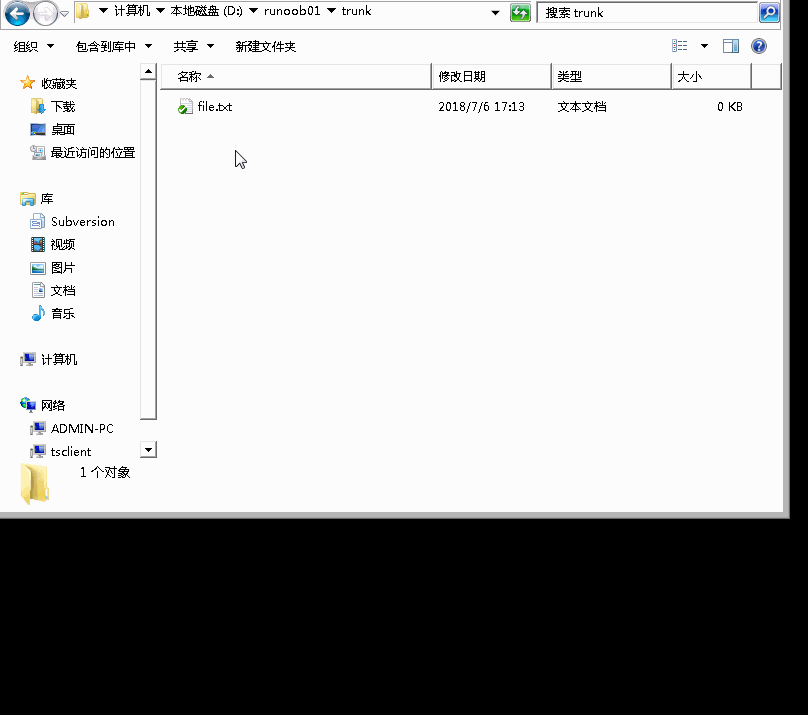
如果您确认这次的 merge 没有问题，您可以直接使用 commit 来将这两个被修改的档案 commit 回 SVN repository 上。如果有问题，您可以直接修改这两个档案，直到确认 ok 了，再行 commit。
所谓的 Tag 或是 Release 就是一个特别的版本，因为这个版本可能有特别的意义。例如：这个版本是特别的 Milestone 或是 release 给客户的版本。其实，Tag 与 Release 的作法与 Branch 完全相同。只是 Branch 可能会需要 merge 回原来的 trunk 中，而 tag 及 release 大部分都不需要 merge 回 trunk 中。
举例来说，今天我们的 trunk 做了一版，这个版本被认定是软件的 1.0 版。 1.0版对于开发来说是一个非常重要的里程碑。所以我们要特别为他做一个标记，亦即 Tag。假设，这个 1.0 版是要正式 release 给客户或是相关 vendor，我们要可以为他做一个 Release 的标记。基本上，SVN 只有目录的概念，并没有什么 Tag 的用法。所以您会看到在 SVN 的选单上面，Branch 与 Tag 是同一个项目。以这个 1.0 的例子来说，我们在 runoob01 目录下创建 tags 目录用于存放打 tag 的版本，并提交到版本库，然后在 Trunk 上面，按下鼠标右键，选择 Branch/Tag 的项目：
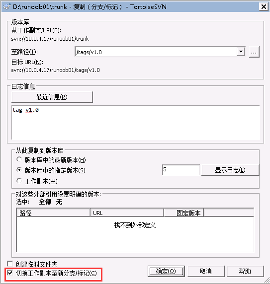
成功的话，您就在对应的 Tag 目录下面建立了一个 v1.0 的目录。当然，如果您这时到 Tag 的目录下面去，会看不到这个目录，您需要在 Tag 目录下面 update 一下，才能看到它。
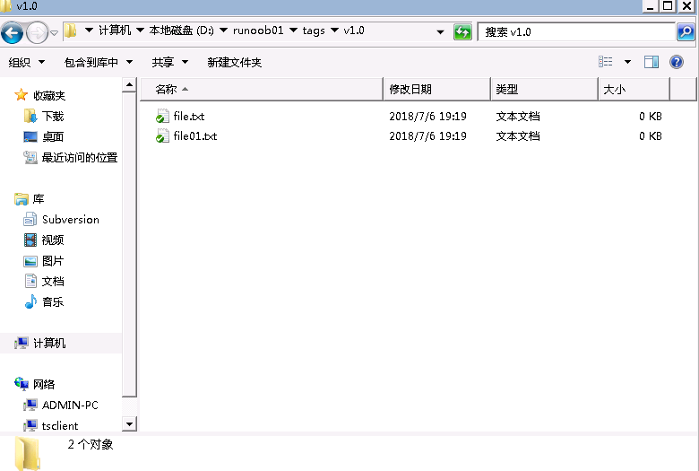